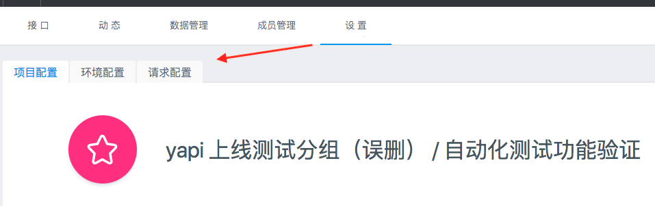
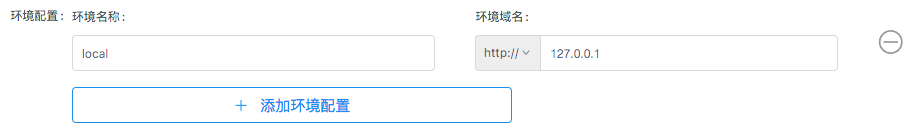

新建项目 #
点击右上角的 + 新建项目，进入新建项目页面。

在新建项目页，填写项目信息：
- 项目名称不允许重复，包括其他分组
- 基本路径为接口统一添加了前缀
- 新建项目页只列出了部分配置，其他详细配置(环境配置、项目图标等)需要进入项目页的“设置”面板进行配置。

修改项目 #
在项目页点击上方的 设置 Tab 进入项目设置面板，这个面板涵盖了项目的所有配置。

这里比新建项目页面新增的功能如下：
修改项目图标 #
点击项目图标，可以修改图标及背景色：

配置环境 #
环境配置 一项可以添加该项目下接口的实际环境，供 接口测试 使用。

删除项目 #
点击下方的删除按钮，输入项目名称进行删除。
删除项目是高风险操作，因此 YApi 对这个操作进行了特别的约束。